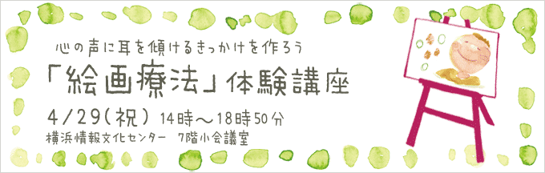

関東短期集中講座
2012年４月２9日（祝） 絵画療法体験講座→無事終了しました♪

言葉が苦手な方には「絵画療法」が最適
臨床心理学の分野のひとつに、「絵画療法」というものがあります。
普段私たちは言葉を使って思考していますが、自分の気持ちを言葉にするのって
意外と難しいですよね。。
・家族や友人関係で悩んでいるが口下手だから相談できない・・・
・悩みがあっても、うまく表現できない・・・
・自己開示が苦手・・・・
・悩みを相談しても言葉にするとなんか違う・・・
なんてことがあるかもしれません。
そんな時は絵画療法を試してみることをおススメします♪
「絵画療法」では「絵」という手段を使って、
言葉では表現できない自らのこころの声を聴くことができます。
そうすることで、ストレスの発散はもちろん、押し込んでいた
自分の姿を発見する手助けにもなるのです。
・絵を描くと人間関係の問題がわかることも
小学生の頃に、絵を描く授業がありましたよね。
そのとき、風景画や人物画、何か粘土でモノを創ったことがあるかもしれません。
そのとき、どんな気分になりましたか？言葉では言い表せない、
なんだか充実した気分になったと思います。
絵を描いたり、芸術的な活動をすることは、統計的にも
メンタルヘルスにとても効果があることが分かっています。
絵を書き終わった後、講師とその画について語ることで、
自分の中にある悩みが発見されて、スッキリすることもあります。
今回の講座では参加者の皆さんにある「ヒント」を出して、
そのヒントをもとに絵を描いて頂きます。
例えば1つのセッションでは「家族」をテーマとして
絵画慮法をやってみます。もし今家族で問題を抱えているとしたら、
普段は気がつかなかった問題が絵になって現れるかもしれません。
そして実際描いて頂いた絵を眺めつつ、臨床心理学的な観点から、
皆さんが「こんなことに悩んでいるのかな？」とヒントをお伝えします。
そういったヒントを日常の人間関係に役立てて頂けると幸いです。
絵の上手い下手はまったく関係ありません。
広告を書いている講師川島も絵画療法を体験したことがありますが、
めちゃめちゃ絵が下手です（笑）でも様々な気づきがありました。
絵を描きながら、そして自分の絵について分析しながら、
普段なら感じ取れないような自らのこころの声に耳を傾けてみましょう。
面白くて、日常生活でも使える描画技法を紹介するつもりです。
のんびりじっくり、絵画療法の世界を楽しんでいただけたらと思っています。
【目次】
１．ウォーミングアップ
アイスブレイク
大川自己紹介
２．絵画療法とは？
絵画療法基礎講座
絵画療法は何に役立つのか？
心理療法やこころの病について考えよう
コミュニケーションと絵画療法について
３．絵画療法を体験してみよう
実際に絵を描いてみよう！
できた絵を見て、講師と分析
４．シェアリング
何が感じ取れたか？
分析を通して気づいたこと・・
自分の人間関係あり方ついて考える
（家族・友人関係・自分の心の問題）
【こんな方にオススメ】
- 「絵画療法」「心理療法」や「カウンセリング」に興味がある
- 自分の「悩み」や「こころの問題」について知りたい
- 家族や友人が心の問題を抱えている
- 心理学の知識を対人コミュニケーションに役立てたい
【こんな方にオススメ】
- ・「絵画療法」「心理療法」や「カウンセリング」に興味がある
- ・自分の「悩み」や「こころの問題」について知りたい
- ・家族や友人が心の問題を抱えている
- ・心理学の知識を対人コミュニケーションに役立てたい
【目標】
- 絵画療法や描画分析を通して家族や友人のあり方を改善する
- 言葉にできない自分の深い部分の理解を図る
- 絵画療法を覚えて日常生活に役立てる
- 「絵」を介しコミュニケーションを楽しむ♪
【講師】
カウンセラー(臨床心理士/精神保健福祉士) 大川ふみ
講師からヒトコト:
この講座では、絵画療法や心理療法の基本的な考え方について紹介していきます。また絵画療法を実際に体験することで、自己理解を深めたり、心理療法の効果について少しでも実感できればと思っています。講座は暖かい雰囲気で気軽に参加できるものですので、ぜひお気軽に参加してくださいね！
絵画療法講座は無事終了しました
注意点
このセミナーではこころの内面に関する問題を取り扱います。
セミナー内で知りえた個人情報は他言しないようにしてください。
意見交換は自由に行っていただけると良いと思います。
ひとの意見を批判しないように気をつけて参加しましょう。
意見を求められても答えたくない場合や、グループに参加したくない場合は、
パスすることができます。「パスします」と言ってください。
無理せずのんびりやりましょう!